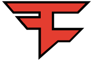
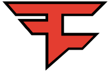

FaZe Clan is an American professional esports and entertainment organization founded in May 2010. They are the first international team to win a Global Offensive Major, doing so at PGL Major Antwerp 2022.

 

Natus Vincere (Latin for "born to win", often abbreviated to NAVI and previously Na`Vi) is an Ukrainian professional esports organization. They were the first team to win all Counter-Strike Majors in one calendar year, with Intel Extreme Masters IV, ESWC 2010, and WCG 2010, and the first team to win a Global Offensive Major without dropping a map, doing so at PGL Major Stockholm 2021.

.png)
Heroic is a Norwegian esports organization founded by the former members of Team X in 2016 in Denmark. The moniker had previously been used in 2013 for a Danish team featuring Nicolai "device" Reedtz, and for subsequent Danish mixes. On February 16, 2021, the organization was acquired by Omaken Sports, a Norwegian gaming investment company. [1]

Team Vitality is a French esports organization which entered Counter-Strike: Global Offensive in early October 2018.